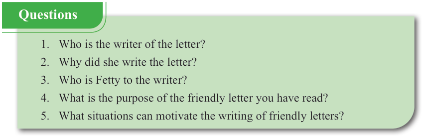

English for Secondary Schools Student’s Book Form One, printed page 167

Questions
1. Who is the writer of the letter?
2. Why did she write the letter?
3. Who is Fetty to the writer?
4. What is the purpose of the friendly letter you have read?
5. What situations can motivate the writing of friendly letters?
1. Who is the writer of the letter? 2. Why did she write the letter? 3. Who is Fetty to the writer? 4. What is the purpose of the friendly letter you have read? 5. What situations can motivate the writing of friendly letters?
(b) Study the following components of a friendly letter.
Then, write a letter to your friend.
 Chart titled “Components of a friendly letter” showing seven parts: sender’s address, date, greetings or salutations, introduction or opening, body, closing, and name, with brief notes on what to write in each part.
Chart titled “Components of a friendly letter” showing seven parts: sender’s address, date, greetings or salutations, introduction or opening, body, closing, and name, with brief notes on what to write in each part.Components of a friendly letter
1. Senders address:
Write your address on the top right corner of the letter.
(see page 166)
2. Date:
Write the date on the top right corner of the letter. e.g, “April 20, 2023; 15th July 1995.”
3. Greetings/salutations:
Start with a friendly greeting, e.g. Dear Polly
4. Introduction/Opening:
Write a sentence or two to introduce a letter.
For example, “I hope you are doing well.”
5. Body:
This is the main part of the letter with news, thoughts or questions.
It states why you are writing the letter, e.g. “I write to let you know about my upcoming birthday.”
6. Closing :
End your letter with a friendly remark, e.g. “Take care” or “Sincerely.”
7. Name:
Write your name at the end of the letter.